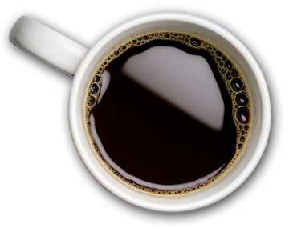
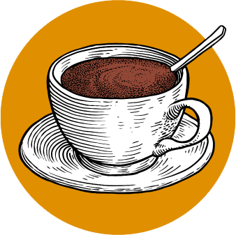

Факт о кофе №1

70% кофеманов пьют «Арабику», которая обладает
приятным, мягким вкусом, а 30% – «Робусту», у которой
вкус горче, и кофеина в нем в половину больше.
«Робуста» – это сорт более низкого класса, но он более устойчив к засухе, болезням, и урожая с него
собрать можно в два раза больше.
В «Арабике» около 1% кофеина, в «Робусте» – 2%.
Изготовители быстрорастворимого кофе в основном смешивают «Робусту» и «Арабику»
Факт о кофе №2
В странах выращивания кофейных деревьев их плоды и сейчас собирают вручную, что необходимо для
обеспечения максимального качества сборки.
Опытный специалист, который вот уже много лет занимается сборкой кофейного урожая, может на протяжении
одного рабочего дня собрать до семи ящиков бобов, каждая из которых имеет вес до 90-100 кг.
За одну корзину человек получает от двух до десяти долларов. А вот когда зерна подсушены и обжарены, то
стоимость одного ящика увеличивается до 100 долларов.
Факт о кофе №3

Сразу несколько независимых исследований в 2014, 2015 и 2016 годах показали, что кофе полезен для печени,
снижает риск возникновения инфарктов и рака кишечника, а пять чашек этого напитка в день и вовсе
уменьшают вероятность преждевременной смерти. Наконец, исследователи выяснили, что кофе связан со
сниженной опасностью развития рассеянного склероза.